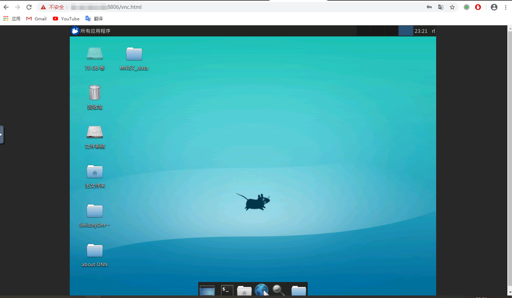
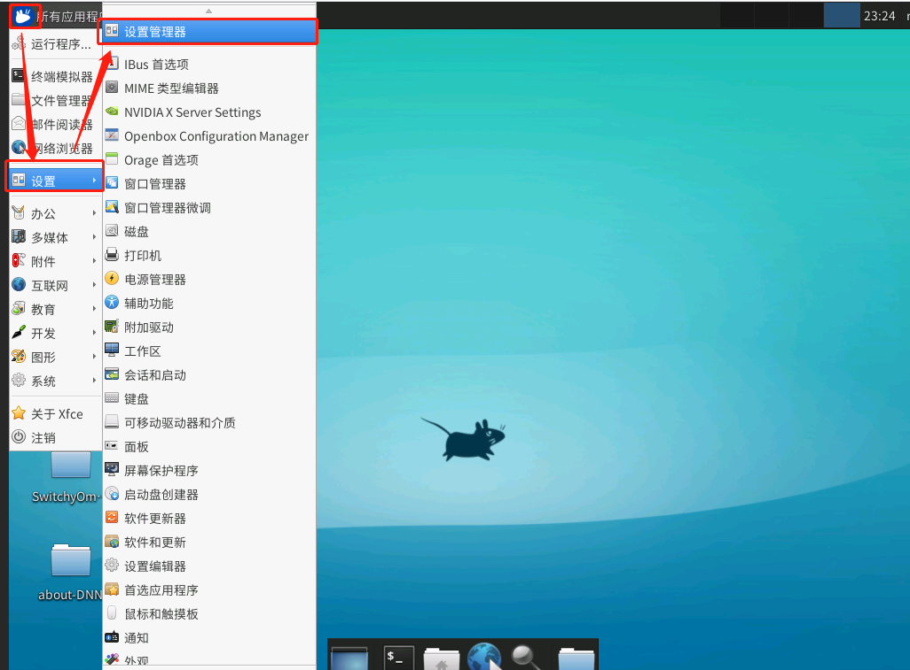
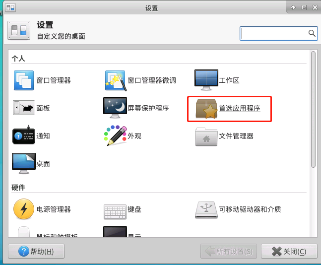
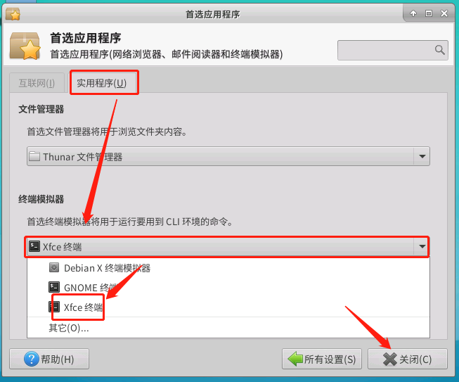

noVNC+frp访问学校的服务器桌面
1. 阿里云开一个实例
开一个实例
配置安全组
7000 -> frp内网穿透服务端口
8806 -> noVnc的访问端口
创建好实例，设置好安全组后测试一下端口是否能正常访问。
#在vps上
nc -l 7000
#在本地
nc vps_ip 7000
然后两边随便输入一些内容看另一端是否能正常受到，如果能，则说明实例安全组配置成功，本地到服务器的链路是畅通的。
2. 配置frp内网穿透
tar -zxvf frp_0.32.0_linux_amd64.tar.gz #解压
cd ./frp_0.32.0_linux_amd64
ls
# LICENSE frpc frpc.ini frpc_full.ini frps frps.ini frps_full.ini systemd
# 其中
# frpc 客户端程序
# frpc.ini 客户端程序的配置文件
# frps 服务端程序
# frps.ini 服务端程序配置文件
# 在vps上执行以下操作
vim ./frps.ini
# 写入以下内容
[common]
bind_port = 7000
vhost_http_port = 8806
# 后台执行
nohup ./frps -c ./frps.ini&
# 在内网的机器上执行以下操作
vim ./frpc.ini
# 写入以下内容
[common]
server_addr = vps_ip
server_port = 7000
[web]
type = http
local_port = 6080 # noVnc默认的代理端口
custom_domains = vps_ip/domain_name # 有域名的话可以直接写域名，我没域名就直接写vps的公网Ip了
# 后台执行
nohup ./frpc -c ./frpc.ini
3. 配置vncserver
部分参考这个链接
因为我之前安装过vncserver所以直接安装桌面环境
# 以下操作均在内网的服务器上执行
sudo apt update
sudo apt install xfce4 xfce4-goodies
mv ~/.vnc/xstartup ~/.vnc/xstartup.bak
vim ~/.vnc/xstartup
# 写入以下内容
#!/bin/bash
xrdb $HOME/.Xresources
startxfce4 &
# 赋予执行权限
sudo chmod +x ~/.vnc/xstartup
# 启动vncserver
vncserver :2
# 关闭vncserver的操作
vncserver -kill :2
可以手动设置vnc桌面的分辨率 ：
vncserver -geometry 1280x1024 :2
4. 配置noVnc
# 解压
tar -zxvf ./v1.1.0.tar.gz
cd noVNC-1.1.0/
./utils/launch.sh -h #查看帮助
./utils/launch.sh --vnc 127.0.0.1:5902 #启动noVnc第一次启动会去github拉取web相关内容
# 之后也可以后台运行
nohup ./utils/launch.sh --vnc 127.0.0.1:5902 &
5. 测试
在本地打开浏览器，地址栏输入http://vps_ip:8806/vnc.html点击链接，输入前边配置vncserver时设置的密码。刚进入桌面的时候会让选择面板，我点了默认。

6. bug
刚进入桌面发现点Terminal模拟器没有相应，参照这篇文章设置后就可以用了。


